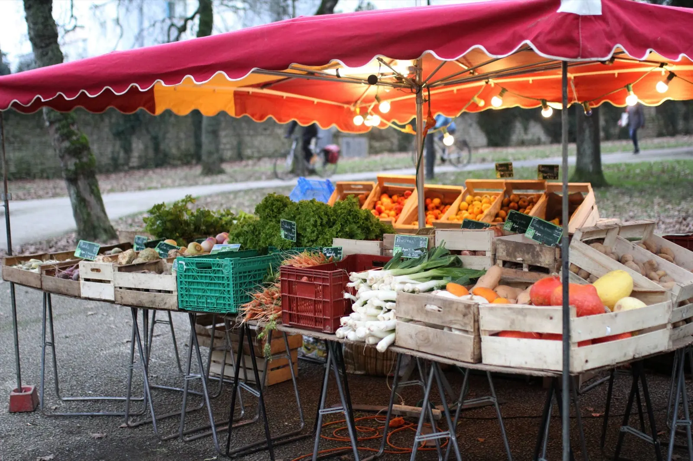
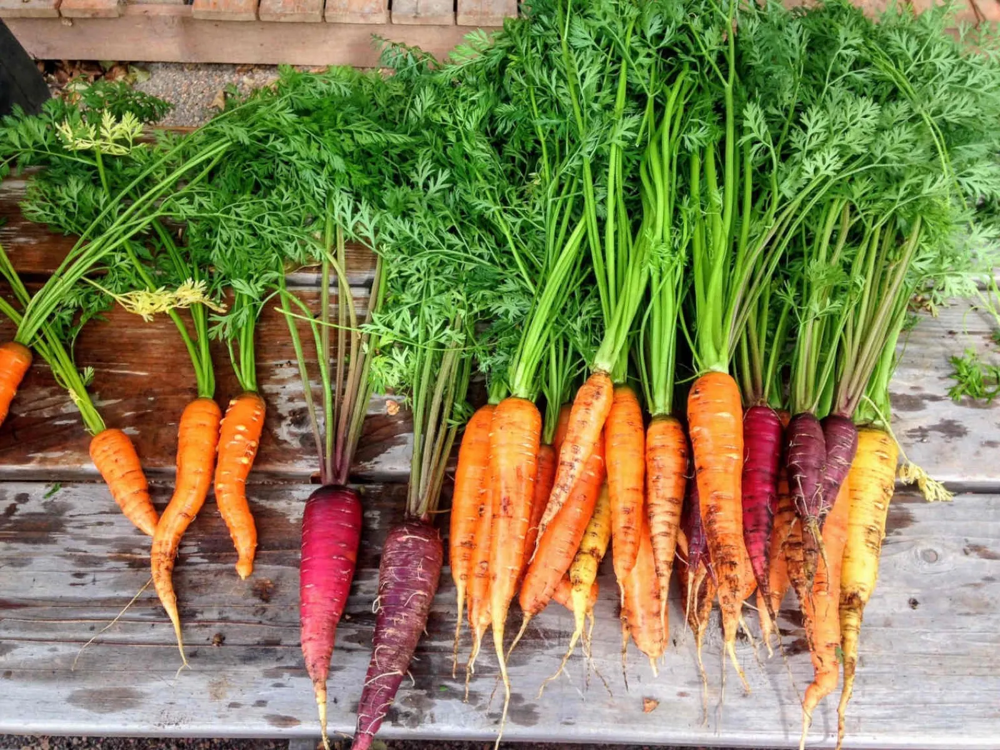
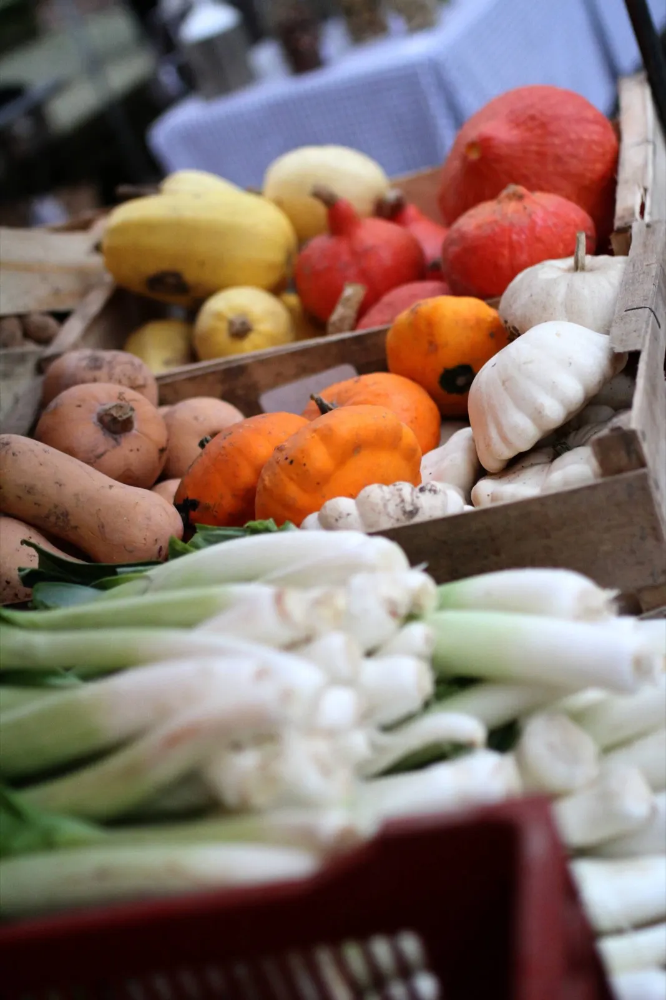
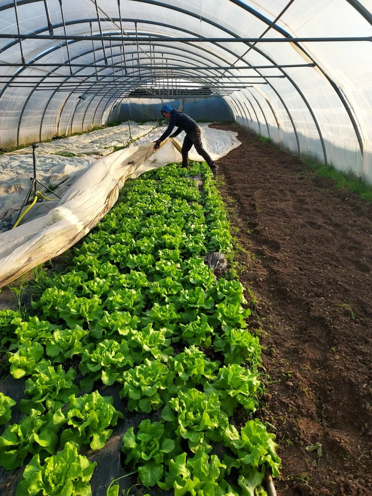

De la graine à votre assiette
À Saint-Christophe, entre La Rochelle et Surgères, nous cultivons fruits et légumes en maraîchage agro-écologique depuis 2008, certifiés bio. Paniers de saison, vente à la ferme et marchés de l'Aunis.
À la ferme le vendredi et le samedi matin, lieu-dit « Treuil Charré ».

Paniers et marchésFruits et légumes frais, conserves
- Depuis 2008en maraîchage agro-écologique
- 4,5 hectaresde parcelles autour de Saint-Christophe
- Bio depuis 2019certifiés AB par Certipaq
- 90 % des plantsproduits à la ferme
- Aunisentre La Rochelle et Surgères
Tout a commencé avec un jardin
Très vite, la clientèle nous a fait comprendre qu'il fallait trouver d'autres terres à jardiner. En 12 ans, nous sommes passés à 4,5 hectares pour proposer une offre plus diversifiée. Nous avons entamé notre conversion à l'agriculture biologique en février 2017, sans changer nos méthodes : elles étaient déjà autorisées en bio.
Bio
Certifiés AB depuis février 2019 par l'organisme Certipaq.
Patience
Nous laissons aux plantes le temps de pousser, pour toutes les saveurs du terroir de nos parcelles.
Nos choix
Nous produisons 90 % de nos plants : des variétés pleines de saveur et d'originalité.

Carottes nouvelles, avec leurs fanes

Légumes de saisonLivraison à domicileLe mercredi et le jeudi, à partir de 20h.
Nos paniers de saison
Laissez-vous surprendre par une sélection de légumes bio fraîchement récoltés à la ferme. Chaque panier est composé selon les récoltes du moment, pour cuisiner sainement toute la semaine.
Panier « Grand Festin Familial »
40,00 €Légumes bio de saison, composés selon les récoltes du moment.
Panier « Saveurs d'Automne »
20,00 €Une composition variée, fraîche et 100 % de saison.
Panier « Douceur Fruitée »
18,50 €Les fruits de saison, frais et récoltés à point pour des saveurs intenses.
« Refaire découvrir le véritable goût des fruits et légumes est notre devise. »
La Ferme du Treuil Charré
Où nous trouver dans la semaine
À la ferme le vendredi et le samedi, sur les marchés toute l'année. Fermé à la ferme du lundi au jeudi et le dimanche.
Mercredi
Marché15h – 19hMarché local et bio de Laleu, La Rochelle
Jeudi
Marché16h – 19hMarché bio de Salles-sur-Mer
Vendredi
À la ferme10h – 12h et 15h – 18hLieu-dit « Treuil Charré »
1er vendredi du mois8h – 13hMarché de Saint-Jean-de-Liversay
Samedi
À la ferme9h30 – 12h30Lieu-dit « Treuil Charré »
Marché8h – 13hMarché de Mauzé-sur-le-Mignon
Dimanche
Marché8h – 13hMarché de Saint-Hilaire-la-Palud
En saison, de juin à septembrele dimanche matin, marché des Boucholeurs à Châtelaillon.

Sous la serre, les saladesNos méthodes de culture
Nous produisons fruits et légumes en agriculture biologique, par respect du végétal et de l'environnement qui nous entoure. Nous réalisons nos propres semences, et nous traitons avec des purins de plantes oubliées ou sauvages, trouvées autour de Saint-Christophe et dans les marais :
- consoude
- prêle
- ortie
- rhubarbe
- feuilles de tomates
- ail
- oignon
- lavande
- savon noir
Une question, une commande ?
Appelez-nous ou écrivez-nous : nous vous répondrons dans les plus brefs délais. Sur la boutique en ligne : fruits, légumes, conserves et paniers.
- Téléphone
- 06 79 53 56 9506 30 82 41 07
- La ferme
- Lieu-dit « Treuil Charré »
17220 Saint-Christophe - Vente à la ferme
- Vendredi 10h – 12h et 15h – 18h
Samedi 9h30 – 12h30